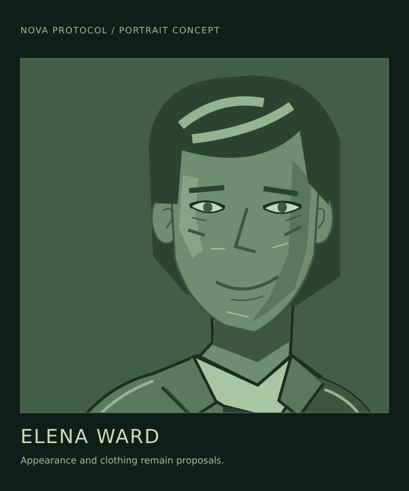

Lore / Elena Ward
Elena Ward
 | |
| Portrait concept. Appearance and clothing are not established designs; green is the encyclopedia's presentation. | |
| Role | Co-founder and station manager |
|---|---|
| Company | Clearwell Waterworks |
| Workplace and home | Baikal |
{kind=link}
Elena Ward is a co-founder of Clearwell Waterworks and the manager of Baikal, its inhabited water-processing station. Elena lives at Baikal: the community affected by the company's decisions is also the place the manager calls home.
Work and judgment
Practical and approachable, with dry humour, Elena is careful with money without treating cost as the only measure of a decision. Managing the station includes authorizing company spending and handling commercial commitments, with consequences for both the business and its people.
Elena can accept a financial loss without pretending it is painless or agreeing that every demand behind it is fair. Taking responsibility for an expense does not require abandoning objections to how a customer treats Clearwell.
Working with Jonah Mercer
Jonah Mercer commands Kaveri, one of Clearwell's working ships. Elena is the captain's shore contact, bringing the station's needs and the company's commitments into their working exchanges.
Elena treats Jonah as a trusted professional, not an apprentice. Their different responsibilities remain clear: Elena manages Baikal and the company's spending, while Jonah commands the workship and is responsible for its crew.